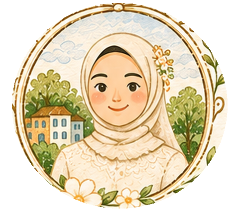

✧
Akad Nikah
Jumat, 8 Januari 202707.00 WIB
Rumah Mempelai Putri
JUMAT · 8 JANUARI 2027

وَمِنْ اٰيٰتِهٖٓ اَنْ خَلَقَ لَكُمْ مِّنْ اَنْفُسِكُمْ اَزْوَاجًا لِّتَسْكُنُوْٓا اِلَيْهَا وَجَعَلَ بَيْنَكُمْ مَّوَدَّةً وَّرَحْمَةً ۗ
“Dan di antara tanda-tanda (kebesaran)-Nya ialah Dia menciptakan pasangan-pasangan untukmu dari jenismu sendiri, agar kamu cenderung dan merasa tenteram kepadanya, dan Dia menjadikan di antaramu rasa kasih dan sayang.”
QS. Ar-Rum: 21 (kutipan ayat)
Dengan rahmat Allah SWT
Dengan penuh rasa syukur, kami bermaksud menyelenggarakan pernikahan putra-putri kami.
Bapak H. Ponari, S.Pd., M.M.
dan Ibu Enis, S.Pd.
Bapak Akhmad Nur Yasin, S.Ag.
dan Ibu Arin Supatonindra
Insya Allah
Dengan segala kerendahan hati, kami mengundang Bapak/Ibu/Saudara/i untuk hadir dan memberikan doa restu.
Jumat, 8 Januari 202707.00 WIB
Rumah Mempelai Putri
Jumat, 8 Januari 202713.00–22.00 WIB
Rumah Mempelai Putri
Dsn. Bejijong, RT. 001/RW. 001,
Ds. Bejijong, Kec. Trowulan,
Kab. Mojokerto
Tanda Kasih
Doa restu Anda merupakan hadiah yang sangat berarti bagi kami. Bagi Bapak/Ibu/Saudara/i yang ingin mengirimkan tanda kasih, dapat melalui rekening berikut.
901763733897
a.n. Dinda Anggraini
6140686831
a.n. Aldi Pradana Muhammad
Mohon periksa kembali nama penerima sebelum melakukan transfer.
Kehadiran Anda Berarti
Silakan isi konfirmasi kehadiran dan pesan untuk kedua mempelai.
Semoga menjadi keluarga yang sakinah, mawaddah, warahmah.
Ucapan tamu dikirim melalui WhatsApp. Untuk menampilkan ucapan dari semua tamu secara langsung di website, diperlukan penyimpanan online yang belum diaktifkan.
Merupakan suatu kehormatan dan kebahagiaan bagi kami apabila Bapak/Ibu/Saudara/i berkenan hadir untuk memberikan doa restu kepada kami.
Atas kehadiran dan doa restunya, kami mengucapkan terima kasih.
Aldi & Dinda
8 Januari 2027